Yaahlan · 工具台能力
工具台能力 · 使用说明书
当前目录规模（自动生成）：349 条能力 · 27 个功能模块（见platform/catalog.html页内 JSON 的generated_at）。
工具台把 Admin、MOA、Tunnel、风控、线上环境、钉钉等已登记能力合并成可搜索、可填参、一键填入 Agent 输入框的目录。日常在 Web Agent 侧栏使用；也可单独打开本地 catalog.html（Cursor bridge 版）。
1. 打开方式
| 入口 | 说明 |
|---|---|
| Web Agent | 浏览器打开 http://127.0.0.1:18766/chat.html → 顶栏 工具台 图标 → 右侧「工具台能力」面板 |
| 说明书网页 | python3 platform/open_catalog_manual.py → http://127.0.0.1:18766/catalog-manual/（改 MD 后需重新生成） |
| 本地目录页 | 仓库根目录执行 python3 platform/open_catalog.py → 浏览器 http://127.0.0.1:18765/catalog.html |
| 离线版 | 目录页左侧 导出到桌面，或 python3 platform/export_catalog.py → 桌面 Yaahlan智能工具平台.html（提示语为 复制，无 bridge） |
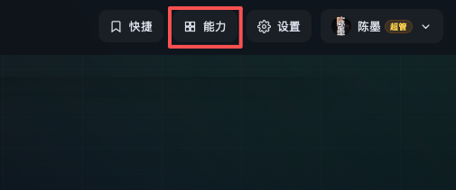
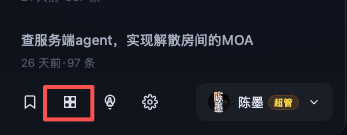
启动 Web Agent：
bash platform/web_agent/run.sh --serve
# 或
python3 platform/web_agent/open_web_agent.py2. 界面结构
┌─────────────────────────────────────────────────────────┐
│ 工具台能力 [MOA 录制] [关闭] │
│ [搜索能力、分类或提示语…] │
├──────────┬──────────────────────────────────────────────┤
│ 左侧分组 │ 功能模块 → 分类 → 能力卡片 │
│ （可拖拽）│ 来源标签 · 展开快捷提示 · 填参 · [执行] │
└──────────┴──────────────────────────────────────────────┘- 左侧分组：个人/团队可定制的目录树（文件夹、模块、能力入口），与 registry 里的 category / 模块归属 相互独立。
- 来源标签：能力卡片上的徽章（如 yaahlan后台、MOA、线上环境），只影响展示样式与文案，不改变能力在左侧分组或 registry 文件中的归属。
- 搜索：匹配能力名、分类名、提示语正文。
- 拖动：面板右缘、左侧分组与主列表之间的分隔条可调整宽度。
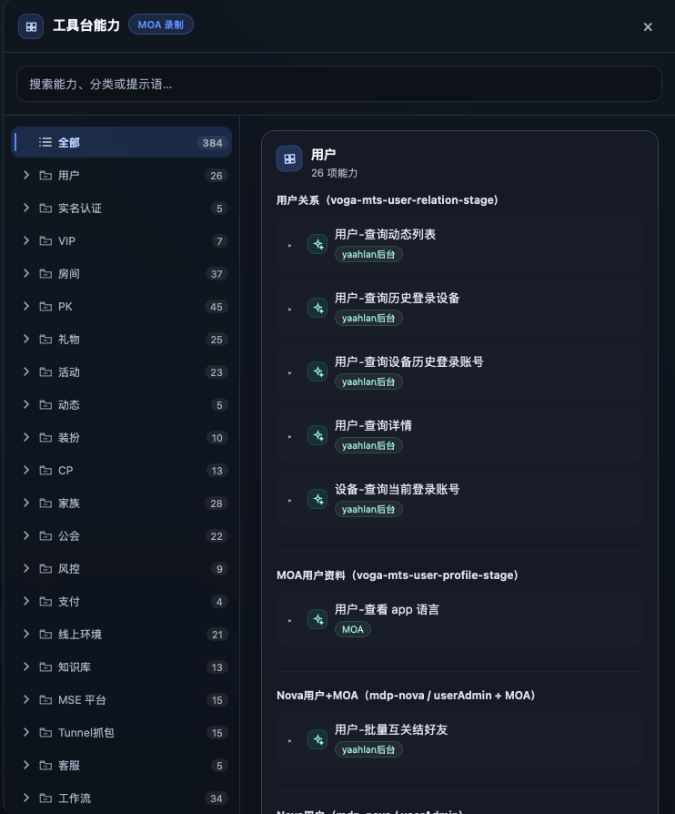
3. 普通用户：查找并执行能力
- 在左侧点选分组，或在搜索框输入关键词。
- 点击能力名称展开/收起「快捷提示」列表（展开状态会保存在浏览器 localStorage）。
- 提示语里带
<参数名|说明>的会变成输入框，填好参数。 - 点 执行：
- Web Agent：填入当前对话输入框，不会自动发送；确认后自行发送。
- 独立 catalog.html（本机 Cursor）：经本地 bridge 填入 Cursor 聊天输入框。
- 需要核对 MOA / Admin / Tunnel 凭证时，点 检查环境配置（填入
@新手上手.md 运行环境检查）。
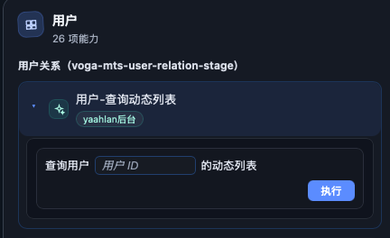
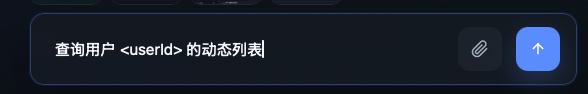
提示语占位语法
| 写法 | 含义 | |
|---|---|---|
<userId> | 参数名 userId，默认中文 label | |
| `<userId\ | 用户 ID>` | 参数名 + 输入框占位说明 |
| 多条提示 | 同一能力可有多条快捷语，右键可增删（见权限） |
4. 管理员：维护分组与能力
须 Web Agent 登录 且账号为 管理员（超级管理员权限更大，见下表）。
4.1 左侧分组
| 操作 | 方式 |
|---|---|
| 新建根分组 | 分组区 + |
| 新建子分组 | 右键分组 → 添加子分组 |
| 重命名 | 右键 → 重命名（文件夹 / 模块显示名 / 能力接口名） |
| 排序 | 拖拽分组行（「全部」不可拖） |
| 从目录移除模块 | 右键顶层模块 → 从目录移除（不删 registry 能力本身） |
| 删除文件夹 | 右键 → 删除（子项归并到上级；仅超管） |
分组数据保存在 platform/web_agent/config/catalog_nav.json。
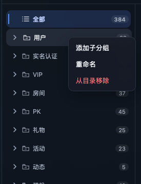
4.2 能力与快捷提示
| 操作 | 方式 |
|---|---|
| 添加能力 | 右键 分类标题（模块区）→ 添加能力 → 填名称、选 来源标签 |
| 添加 MOA（生成式） | MOA 模块分类右键 → 添加 MOA 能力 → 提示语写入对话，走抓包入库流程 |
| 编辑能力名 / 来源标签 | 右键能力标题 → 编辑 |
| 编辑 / 添加快捷提示 | 右键某条提示 → 编辑 / 添加快捷提示；对话框可 插入输入框 |
| 删除一条提示 | 右键该条 → 删除 |
| 删除整条能力 | 右键能力标题 → 删除能力（MOA 会同时删模板；仅超管） |
变更写入对应模块的 config/registry.json，并刷新工具台目录。
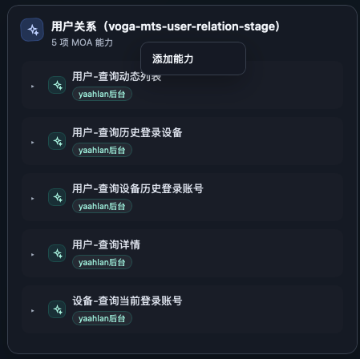
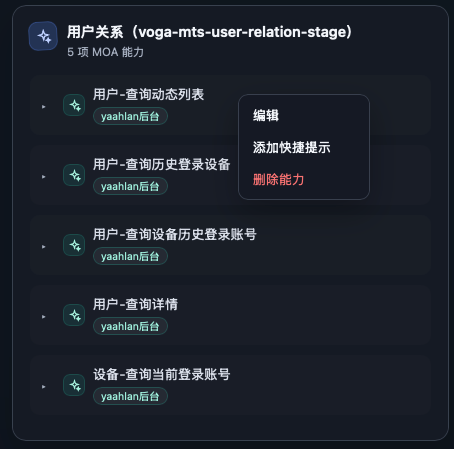
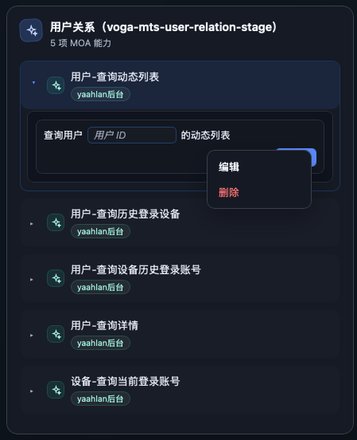
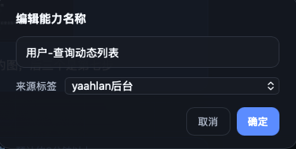
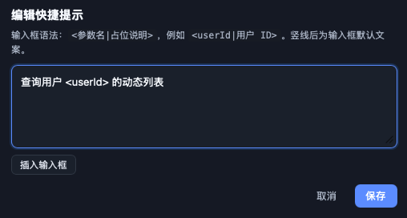
4.3 权限一览
| 操作 | 管理员 | 超级管理员 |
|---|---|---|
| 添加/编辑分组、拖拽排序、重命名 | ✓ | ✓ |
| 添加能力、改名称/来源标签/快捷提示 | ✓ | ✓ |
| 删除分组文件夹 | ✓ | |
| 删除 registry 中的能力 | ✓ |
未登录或未授权时，服务端 /api/catalog-nav、/api/catalog-prompt 会拒绝保存。
4.4 MOA 录制
面板顶栏 MOA 录制：打开录制弹窗，可选 MOA 截图、完整请求、抓包账号行为、服务端代码 等方式生成 MOA，试跑通过后写入 MOA/templates 与 registry（全员可用，与「添加 MOA 能力」互补）。
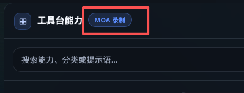
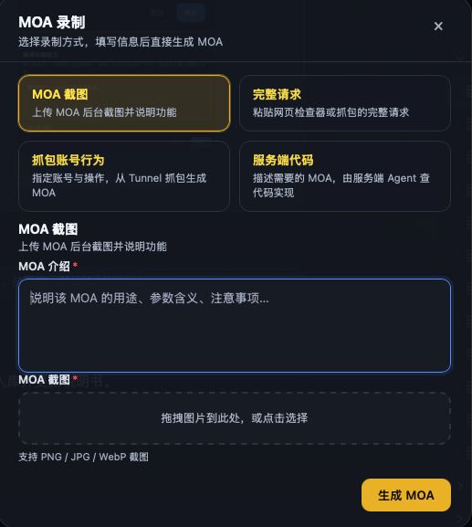
5. 能力数据从哪来
| 来源模块 | registry 路径 |
|---|---|
| yaahlan后台 | Admin/config/registry.json |
| MOA | MOA/config/registry.json |
| 风险控制 | Risk/config/registry.json |
| Tunnel 抓包 | Tunnel/config/registry.json |
| 线上环境 | online/config/registry.json |
| 钉钉文档 | DingTalk/config/registry.json |
模块登记与一级功能归并：projects/yaahlan/sources.json（AGENT_PROJECT=yaahlan 时生效）。
开发侧同步（改 registry 后）：
python3 Admin/scripts/generate_index.py # 或 MOA / Risk / Tunnel / online / DingTalk
# 会自动刷新 platform/catalog.html新增整个工具模块时，除 registry 外须在 sources.json 的 modules 中登记。
6. 常见问题
| 现象 | 处理 |
|---|---|
| 执行无反应（独立 catalog） | 确认 open_catalog.py 已启动 bridge（默认 127.0.0.1:18765），Cursor 已打开 |
| 改了来源标签徽章没变 | 强刷页面；确认已保存且 catalog 已重新生成 |
| 线上能力误用测试环境 | 线上能力在「线上环境」模块，提示语中需带 线上环境 字样（见仓库规则） |
| 能力列表比同事旧 | 拉最新代码或让管理员执行 generate_catalog.py / 各模块 generate_index.py |
7. 相关文档
- 平台总览：
platform/README.md - 环境与新手上手：仓库根目录
新手上手.md - 说明书网页：
platform/exports/catalog-manual/index.html（python3 platform/scripts/generate_catalog_manual_html.py） - Agent 触发打开工具台：对话中说「工具平台 / 新手引导」等 →
python3 platform/open_catalog.py - Cursor 搭建平台长文：
platform/exports/cursor-platform-guide/index.html（内网部署后访问/platform-guide/）
*文档版本与仓库 platform/catalog.html 同步维护；能力数以 catalog 生成为准。*